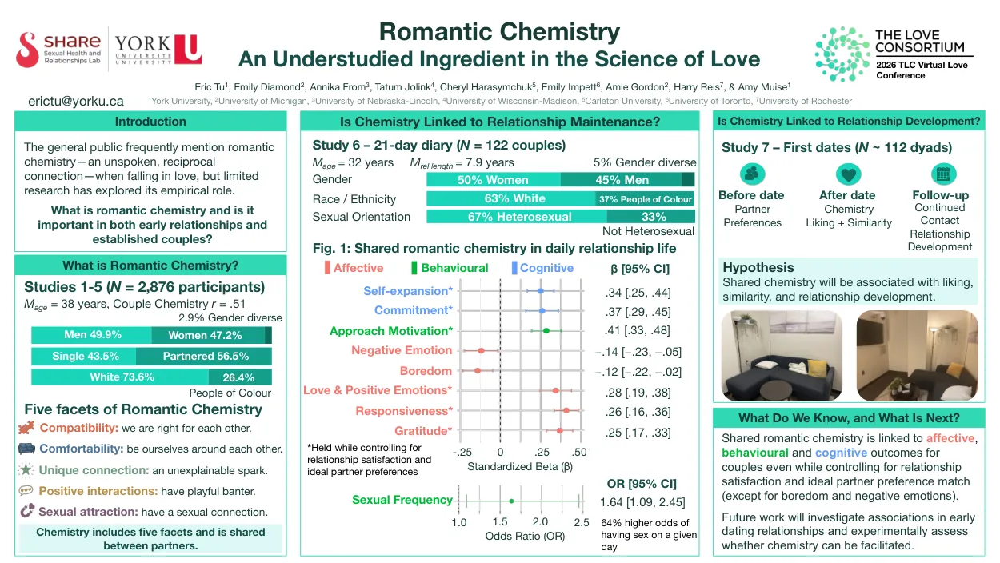
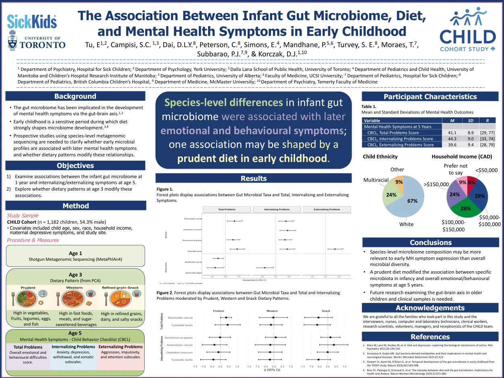
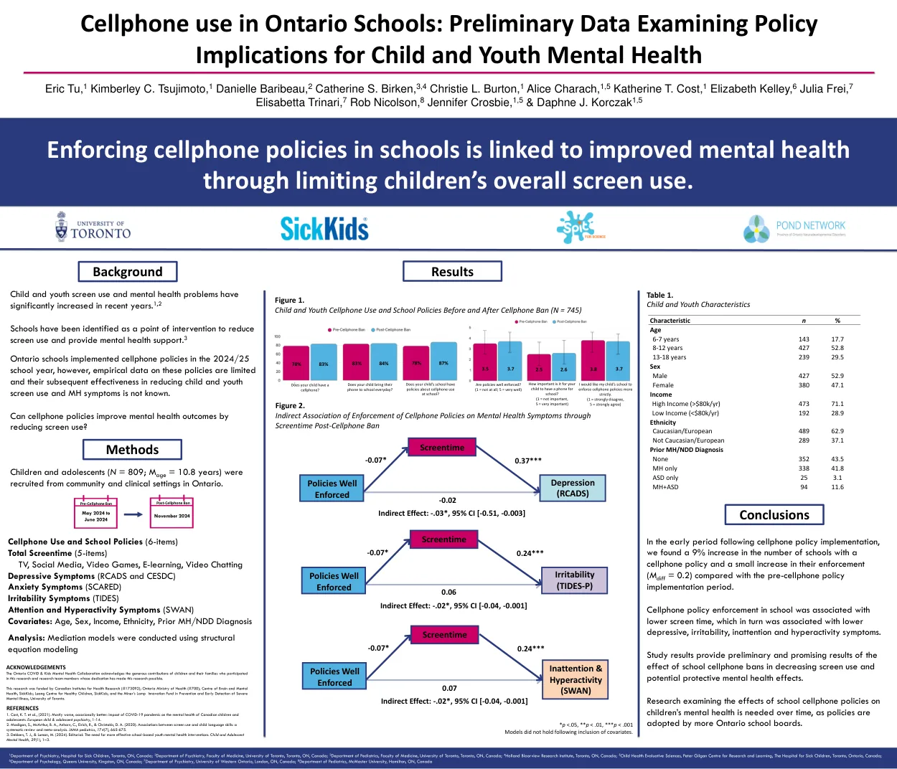
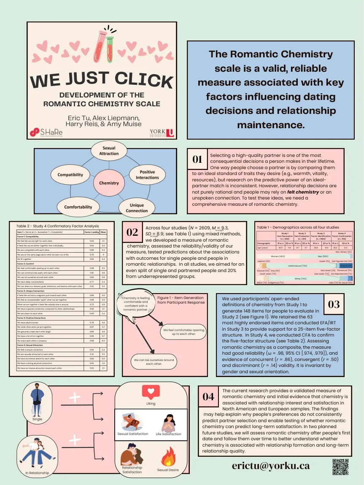
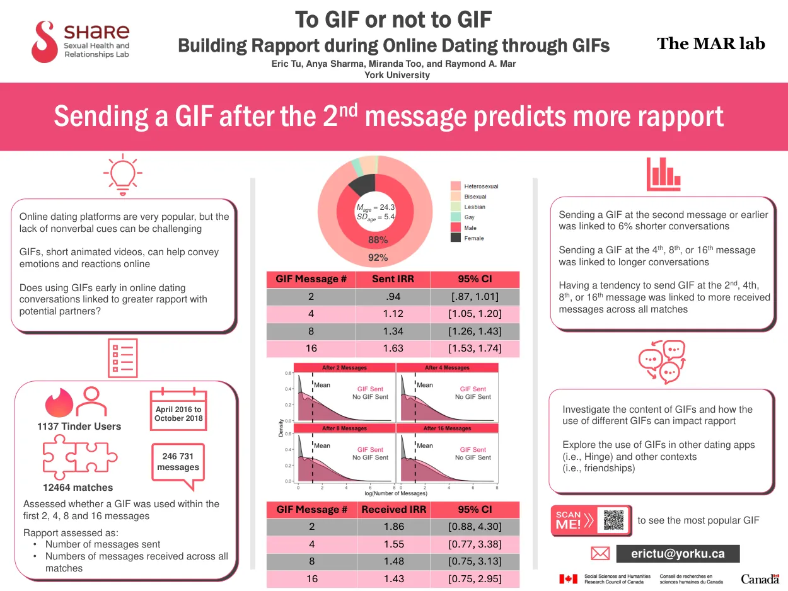
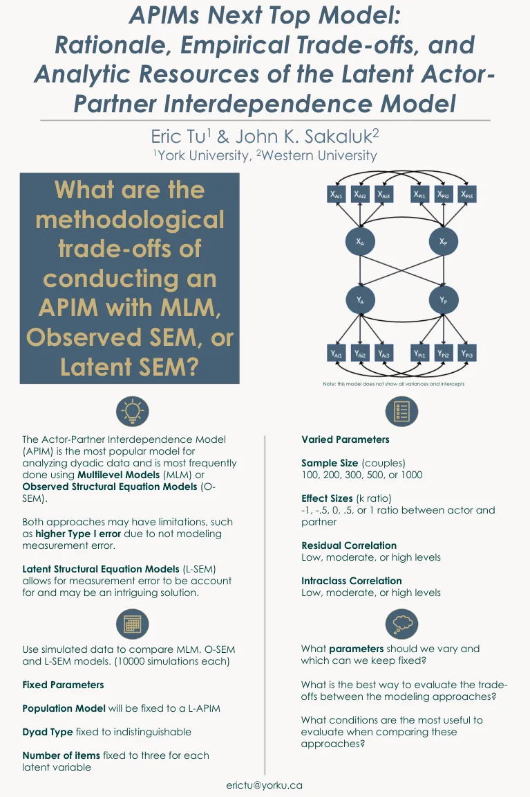

Conference and invited presentations
Sharing the research.
Selected talks and posters from my relationship science, methods, and collaborative mental health research. Posters are available as PDFs; some present preliminary or early-stage work.
Selected posters
Six downloadable conference posters

01Relationship science
Romantic Chemistry: An Understudied Ingredient in the Science of Love
The Love Consortium · Virtual Love Conference · 2026
Romantic chemistry in couples and first-date researchView poster (PDF) ↗ 
02Child mental health
The Association Between Infant Gut Microbiome, Diet, and Mental Health Symptoms in Early Childhood
Mulsant-Pollock Research Day · Toronto · 2026
First-author collaborative research at SickKidsView poster (PDF) ↗ 
03Child mental health
Cellphone Use in Ontario Schools: Preliminary Data Examining Policy Implications for Child and Youth Mental Health
Leong Centre for Healthy Children Symposium · 2025
Preliminary conference findingsView poster (PDF) ↗ 
04Measurement
We Just Click: Development of the Romantic Chemistry Scale
Society for Personality and Social Psychology · 2024
Graduate Student Poster Award finalistView poster (PDF) ↗ 
05Online dating
To GIF or Not to GIF: Building Rapport During Online Dating Through GIFs
International Association for Relationship Research · 2024
Analysis of online dating messagesView poster (PDF) ↗ 
06Quantitative methods
APIMs Next Top Model: Rationale, Empirical Trade-offs, and Analytic Resources of the Latent Actor-Partner Interdependence Model
Society for the Improvement of Psychological Science · 2023
Early-stage simulation design, not a completed results reportView poster (PDF) ↗